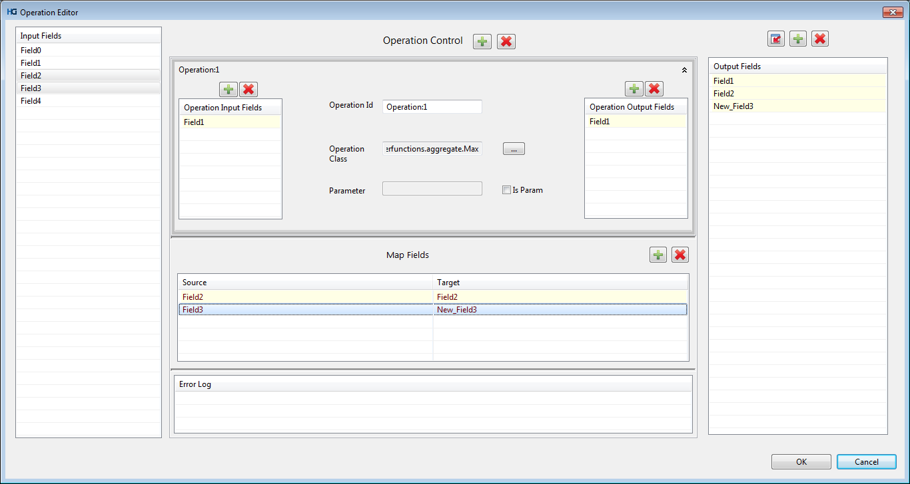
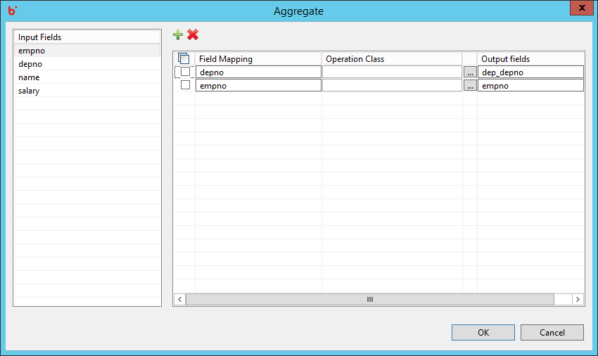
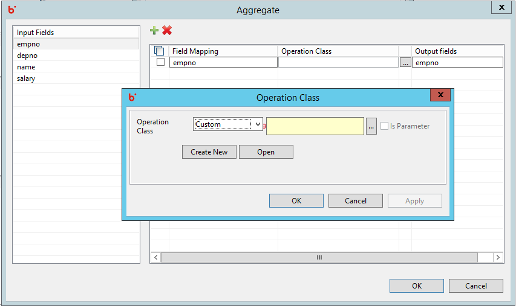
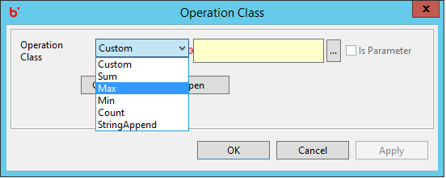
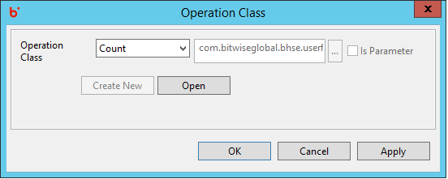
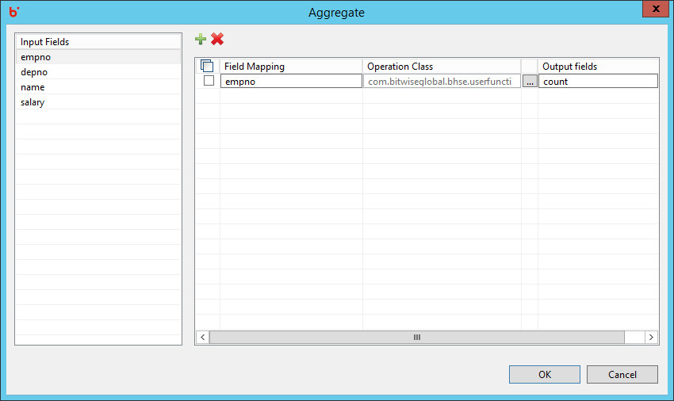
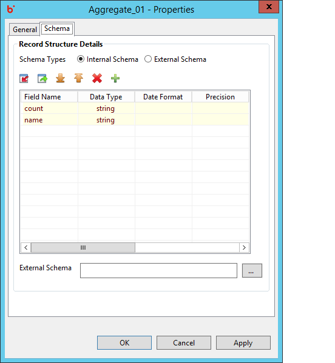

Hydrograph Help
Hydrograph Help
Aggregate Mapping View
Hydrograph Release Version 1.0
Mapping view for the Aggregate component can be viewed by clicking on the Edit button near the Aggregate property on General tab. Input fields arriving from the input port is visible at the extreme left of the grid. In the center users can view the Mapping grid containing empty columns for source fields,operation class and mapped/output fields.

User can drag and drop single or multiple fields in the mapping grid. Those fields that are passed as is in the output are Passthrough fields. Whereas, fields renamed in the output are Map fields or in simple sense aliases for the corresponding input field. In the below example, 'empno' is passed as Passthrough fields whereas, 'dep_depno' is passed as a Map field.

User can specify his own Custom aggregate operation class, or use one of the standard operation classes from the drop-down provided.



On dragging an input field and specifying an operation class the input fields become operation input fields and the corresponding output fields are passed as operation output fields. The operation input fields are used in the operation class specified by the user.

Output fields are visible in the schema grid along with their specified datatypes in case of map and passthrough fields. In case of operation fields, default string datatype is assigned and user needs to change the datatype accordingly.
